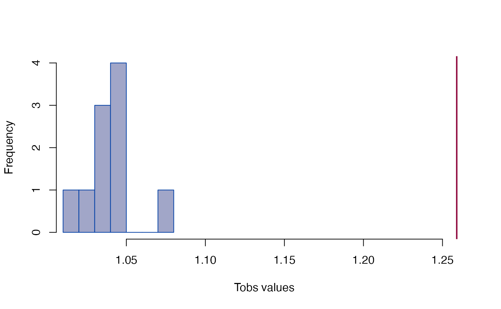

Growth difference
edma_gdm.RdGrowth matrix and growth difference matrix based inference based on Lele and Richtsmeier (1992, 1995).
edma_gm(a1, a2, ...) get_gm(object, ...) # S3 method for edma_gm get_gm(object, sort=FALSE, level=0.95, ...) edma_gdm(a1, a2, b1, b2, ...) get_gdm(object, ...) # S3 method for edma_gdm get_gdm(object, sort=FALSE, level=0.95, ...) # S3 method for edma_gm print(x, ...) # S3 method for edma_gdm print(x, ...) # S3 method for edma_gm T_test(object, ...) # S3 method for edma_gdm T_test(object, ...) # S3 method for edma_gdm landmarks(x, ...) # S3 method for edma_gdm dimensions(x, ...) # S3 method for edma_gdm plot_ord(x, ...) # S3 method for edma_gdm plot_clust(x, ...)
Arguments
| a1, a2, b1, b2 | EDMA fit object to compare growths. |
|---|---|
| x, object | an EDMA GM or GDM objects. |
| sort | logical, if stacked distances are to be sorted, see Examples. |
| level | numeric, between 0 and 1, alpha level for confidence interval. |
| ... | other arguments passed to |
Details
Growth matrix (GM) is calculated as the ratio of form matrices (FM) from the numerator and denominator objects following Lele and Richtsmeier (1992, 1995): GM(A1,A2) = FM(A2)/FM(A1). Form matrices are formed as pairwise Euclidean distances between landmarks from EDMA fit objects using the estimated mean forms.
Growth difference matrix (GDM) is calculated as GDM(A1,A2,B1,B2) = GM(B1,B2) / GM(A1,A2).
Inference and visualization is similar to how it is done for FDMs.
Value
edma_gm compares two EDMA fit objects and calculates GM.
edma_gdm compares 4 EDMA fit objects and calculates GDM.
The plot_ord and plot_clust
produce plots based on dissimilarities among specimens
in the 2 or 4 objects (for GM and GDM, respectively).
References
Lele, S. R., and Richtsmeier, J. T., 1992. On comparing biological shapes: detection of influential landmarks. American Journal of Physical Anthropology 87:49--65. <doi:10.1002/ajpa.1330870106>
Lele, S. R., and Richtsmeier, J. T., 1995. Euclidean distance matrix analysis: confidence intervals for form and growth differences. American Journal of Physical Anthropology 98:73--86. <doi:10.1002/ajpa.1330980107>
Author
Peter Solymos, Subhash R. Lele, Theodore M. Cole, Joan T. Richtsmeier
See also
Nonparametric fit: edma_fit
Parametric fit: SigmaK_fit
Form difference: edma_fdm
Shape difference: edma_sdm
Examples
file_a1 <- system.file("extdata/growth/CZEM_wt_global.xyz", package="EDMAinR") file_a2 <- system.file("extdata/growth/CZP0_wt_global.xyz", package="EDMAinR") l <- c("amsph", "bas", "loci", "lpto", "lsqu", "lsyn", "roci", "rpto", "rsqu", "rsyn") a1 <- read_xyz(file_a1)[l,,] a2 <- read_xyz(file_a2)[l,,] a1#> EDMA data: Crouzon unaffected embryonic mouse #> 10 landmarks, 3 dimensions, 31 specimensa2#> EDMA data: Crouzon unaffected newborn mouse #> 10 landmarks, 3 dimensions, 11 specimensfit_a1 <- edma_fit(a1, B=10) fit_a2 <- edma_fit(a2, B=10) ## --- growth matrix --- gm <- edma_gm(a1=fit_a1, a2=fit_a2, B=10) gm#> EDMA growth matrix #> Call: edma_gm(a1 = fit_a1, a2 = fit_a2, B = 10) #> 10 bootstrap runs (ref: denominator) #> T = 1.259, p < 2.22e-16#> #> Bootstrap based EDMA T-test #> #> data: growth matrix #> T-value = 1.259, B = 10, p-value < 2.2e-16 #>#> 2.5% 97.5% #> bas-amsph 1.112938 1.134678 #> loci-amsph 1.110562 1.136092 #> lpto-amsph 1.133626 1.169437 #> lsqu-amsph 1.143688 1.177828 #> lsyn-amsph 1.134963 1.172314 #> roci-amsph 1.106076 1.135636#> row col dist lower upper #> 1 bas amsph 1.116726 1.112938 1.134678 #> 2 loci amsph 1.112833 1.110562 1.136092 #> 3 lpto amsph 1.144189 1.133626 1.169437 #> 4 lsqu amsph 1.149705 1.143688 1.177828 #> 5 lsyn amsph 1.139680 1.134963 1.172314 #> 6 roci amsph 1.110515 1.106076 1.135636#> row col dist lower upper #> 45 rsyn rsqu 1.196344 1.184346 1.222284 #> 31 lsyn lsqu 1.194661 1.180692 1.220504 #> 41 rsqu roci 1.159037 1.152771 1.190351 #> 35 rsyn lsqu 1.155865 1.146936 1.180752 #> 19 lsqu loci 1.155629 1.147343 1.178586 #> 16 rsqu bas 1.155440 1.144844 1.175715#> row col dist lower upper #> 28 rpto lpto 0.9502249 0.9187506 0.9824978 #> 34 rsqu lsqu 1.0364970 1.0287761 1.0518709 #> 21 roci loci 1.0365211 1.0274272 1.0495350 #> 27 roci lpto 1.0423805 1.0328540 1.0654307 #> 22 rpto loci 1.0515532 1.0378324 1.0690016 #> 29 rsqu lpto 1.0610708 1.0514065 1.0790671if (interactive()) plot_3d(gm) ## --- growth difference matrix --- file_b1 <- system.file("extdata/growth/CZEM_mut_global.xyz", package="EDMAinR") file_b2 <- system.file("extdata/growth/CZP0_mut_global.xyz", package="EDMAinR") b1 <- read_xyz(file_b1)[l,,] b2 <- read_xyz(file_b2)[l,,] b1#> EDMA data: Crouzon mutant embryonic mouse #> 10 landmarks, 3 dimensions, 18 specimensb2#> EDMA data: Crouzon mutant newborn mouse #> 10 landmarks, 3 dimensions, 11 specimensfit_b1 <- edma_fit(b1, B=10) fit_b2 <- edma_fit(b2, B=10) gdm <- edma_gdm(a1=fit_a1, a2=fit_a2, b1=fit_b1, b2=fit_b2, B=10) gdm#> EDMA growth difference matrix #> Call: edma_gdm(a1 = fit_a1, a2 = fit_a2, b1 = fit_b1, b2 = fit_b2, #> B = 10) #> 10 bootstrap runs (ref: denominator) #> T = 1.1113, p = 0.18182#> #> Bootstrap based EDMA T-test #> #> data: growth difference matrix #> T-value = 1.1113, B = 11, p-value = 0.1818 #>#> 2.5% 97.5% #> bas-amsph 0.9866966 1.027566 #> loci-amsph 0.9836812 1.020428 #> lpto-amsph 0.9829888 1.034542 #> lsqu-amsph 0.9600799 1.014814 #> lsyn-amsph 0.9934617 1.058107 #> roci-amsph 0.9845376 1.018629#> row col dist lower upper #> 1 bas amsph 0.9871097 0.9866966 1.027566 #> 2 loci amsph 0.9962675 0.9836812 1.020428 #> 3 lpto amsph 0.9935320 0.9829888 1.034542 #> 4 lsqu amsph 1.0057657 0.9600799 1.014814 #> 5 lsyn amsph 0.9844980 0.9934617 1.058107 #> 6 roci amsph 0.9981683 0.9845376 1.018629#> row col dist lower upper #> 39 rsyn lsyn 1.040292 0.9228383 1.011632 #> 18 lpto loci 1.013272 0.9539187 1.012572 #> 40 rpto roci 1.010858 0.9560082 1.025880 #> 36 roci lsyn 1.010448 0.9747528 1.004151 #> 21 roci loci 1.008071 0.9501396 1.027616 #> 9 rsyn amsph 1.007449 0.9595159 1.037049#> row col dist lower upper #> 43 rsqu rpto 0.9361207 1.0366762 1.093046 #> 25 lsqu lpto 0.9485414 1.0071160 1.069307 #> 29 rsqu lpto 0.9569724 1.0318811 1.072843 #> 33 rpto lsqu 0.9666629 1.0269893 1.054418 #> 41 rsqu roci 0.9766552 0.9913284 1.047236 #> 19 lsqu loci 0.9791661 0.9834423 1.040605